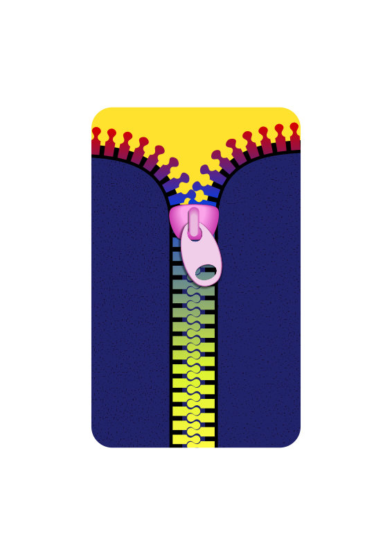

| 1 2 3 4 5 6 7 8 9 10 11 12 13 14 15 16 17 18 19 20 21 22 23 24 25 26 27 28 29 30 31 32 33 34 35 36 37 38 39 40 41 42 43 44 45 46 47 48 49 50 51 |
| - = 11 Aug 2018 = - |
| 22:24:00 | STATUS |  And that's it.... for now! |
| 22:23:49 | BACKUP |  A little update in settings |
| 22:23:11 | PHANTASAR |  Another chapter |
| 21:28:16 | BUG | |
| 21:27:02 | SYSTEM |  And let's see if some stuff is still up-to-date |
| 21:25:32 | BACKUP | Is Running |
| 15:17:41 | STATUS | For now I'll focus on the game once more, although I can't rule out a few future scripts could be written in Scyndi.... Just for fun, you know :P |
| 15:17:01 | SCYNDI |  Well the language is far from finished, but at least I got most of the stuff I need on the short term put in.... Some other work will be done later |
| 15:14:48 | GITHUB |  All repos up-to-date |
| 15:13:16 | UPDATED | |
| 14:59:36 | FIXED |  Misreference |
| 14:59:29 | FIXED | And fixed it! |
| 14:59:22 | SOLVED |  Found the bugger |
| 14:52:13 | MYSTERY |  Impossible error message |
| 14:45:23 | FIXED | Parse errors |
| 14:26:20 | SCYNDI | I've also set up a KILL routine. Now I put in this routine, eventhough MyTypeVar:=NIL should work in future versions, but the translator will then not be able to trigger a garbage collection function if none is present in target language by itself (BlitzMax, Go, Lua and many others have a garbage collection, but C for example, does not). |
| 14:23:56 | SCYNDI | Added a "NEW" command |
| 13:19:11 | STUDY |  However abother thing I studied out can be easier, and maybe also solve the problem I just encountered ;P |
| 13:09:50 | STUDY | I did do some study about php which can make things a little bit complicated, but it has to do... I guess... |
| 10:57:22 | STATUS | Method support comes later |
| 10:57:14 | STATUS | Well, now I need to enable the code to create NEW entries, and to put everything back to NIL |
| 10:56:03 | CONFIRMED |  It appears to be working |
| 10:42:44 | BUG |  But when it comes to types, it does NOT work, and I wonder why... |
| 10:42:25 | CONFIRMED | At least it works that calling stuff from specific units works, so you can prevent certain conflicts |
| 10:32:20 | SCYNDI | I've set up a type-index identifier recogniser... I dunnow if it works though, but I guess, we'll have to see... |
| - = 10 Aug 2018 = - |
| 19:38:27 | STATUS | see ya! |
| 19:38:21 | PHANTASAR | And yesterday I could write another chapter, and maybe I'll also do that tonight |
| 19:38:00 | STATUS | Of course, I'm working on types, once that's done (and pushed), I'll first focus on getting the caves of starrow done, as that is a bit in delay |
| 19:37:18 | MEDICAL |  I felt pretty terrible today, and thus I did no work |
| - = 09 Aug 2018 = - |
| 17:04:20 | BACKUP | I did run an extra backup, though! |
| 17:03:57 | STATUS | Time has NOT been on my side today, so I could not work on anything |
| - = 08 Aug 2018 = - |
| 19:38:02 | SCYNDI | Set up the way to define a new record to a type based variable |
| 19:37:38 | FIXED | Nil mistranslation |
| 17:47:37 | CONFIRMED | Declaration appears to be working |
| 17:30:08 | FAILURE |  Go whines |
| 17:28:01 | COCKROACH |  Apparently not |
| 17:25:17 | FIXED | I think I fixed that |
| 17:20:19 | BUG | Translation of testcode did not get me anything at all... :-/ |
| 16:39:33 | FIXED | All parse errors accounted for |
| 16:39:26 | FIXED | More fixes |
| 16:35:45 | FIXED | Forgotten keyword "range" |
| 16:35:08 | FIXED | Forgotten : |
| 16:34:37 | GO |  And now, let's keep compiling until no more parse errors pop up |
| 16:34:22 | LICENSE |  Up-to-date |
| 16:34:00 | LINK |  Some link code was required though, so it's been provided |
| 16:30:31 | TECHNO |  Fields of Types will also be transformed into alternate names. This is to make sure that words properly fine in Scyndi are not keywords in the target language... Take the word "then" for example which is a keyword in Pascal, Lua and nearly all variants to BASIC, but the word has no meaning whatsoever in Scyndi (and probably will never have it, either). |
| 16:29:17 | NOTE |  It's actually up to the main translation routines to put in the types into translated code, this of course, because this can differ the target language. For Lua (which does not support types as a variant based scripting language) a function has been set up for this. Once the php translator is being created I must say what is best... Using map based tables or actual classes... I have not yet decided. |
| 16:27:38 | LINK | Linked to the main parser |
| 16:20:35 | SCYNDI | Field declaration |
| 15:43:21 | SCYNDI | Type header |
| - = 07 Aug 2018 = - |
| 21:40:56 | OFFTOPIC |  Can you read this? 
|
| 21:30:48 | STATUS | Even now that the sun has set, it's still hot.... Incredible |
| 20:54:27 | BACKUP | Well let's run an extra backup,... With this heath, there is not much else I can do.... ;_/ |
| 20:52:58 | STATUS | The weather forecaster did promise me a thunderstorm tonight and cooler weather after... I hope he's right! |
| 20:51:51 | DONE |  A few tiny things.... It's too hot to work! |
| 20:51:12 | STATUS | Unbelievable.... Everything I could do to make my room cooler has been used and still I'm bathing in my own sweat! Yuck! |
| 18:45:10 | SCYNDI | I did write a little source in Scyndi that will allow me to test things out once everything has been properly linked |
| 17:23:06 | MEDICAL | I need more rest, I plan to take that rest |
| 17:22:42 | GITHUB | I'll wait with updating unless it takes too long to get the types well going, or until it's finished (or at least to an acceptable state) |
| 17:22:06 | BACKUP |  Extra backup running |
| 17:19:55 | FIXED | Parse errors |
| 17:01:42 | NOTE | None of this has been linked yet, so the translator will, for now, ignore all this..... |
| 17:01:15 | SCYNDI | Type definer written for Lua |
| 14:23:59 | SCYNDI | Type declaration translator for Lua set up.... |
| 13:51:58 | SCYNDI | Trans definition in main (called when a "NEW" request is done... By default all custom type variables are 'nil', but when a NEW call is done, they will be defined. |
| 13:48:34 | SCYNDI | Main trans function for type translation |
| 13:45:08 | MEDICAL | I can't focus.... The heath's still killing me... At least the good news is that after the thunderstorm tonight it might get a littlebit cooler (hopefully). |
| 13:43:52 | SCYNDI | Technically importing types should work now, but its support is limited... A few more workouts may come, but it will always be limited as Scyndi cannot not know what a type has in stock as it cannot import such things on the fly, nor am I planning to build support for it in. Defining vars of that types through imported functions should be possible, and that's where it ends. |
| 13:30:29 | CONFIRMED | Fix confirmed |
| 13:29:37 | FIXED | |
| 13:23:32 | FIXED | Field error |
| 13:20:48 | SCYNDI | And I've put in an extra bool for imported identifiers. Mostly no trouble but they can be when types. |
| 13:20:07 | SCYNDI | Preparational stuff for type support |
| 13:19:45 | PHANTASAR | Another chapter |
| 00:53:05 | STATUS | Bye |
| 00:53:01 | TODO |  Calling it a day! |
| 00:52:53 | BACKUP | Is running |
| 00:52:41 | CONFIRMED | I think.... |
| 00:51:28 | MYSTERY | I guess it is..... (with homebrew you never know) |
| 00:46:04 | FIXED | Fixed? |
| 00:33:49 | FAILURE | |
| 00:31:35 | FAILURE | Dyrt download doesn't work... But then again... Updating HomeBrew NEVER worked on me in one go, but I'll get back to that later. |
| 00:28:42 | HOMEBREW |  Repository updated, meaning that the newest version of Dyrt should now be installable through homebrew. |
| 00:24:44 | HUH |  And then suddenly the downloads are there..... |
| 00:23:46 | SOURCEFORGE |  Let's try this again! |
| 00:23:30 | FAILURE | FAILED AGAIN! (What a crappy servers SourceForge has.... Sigh!) |
| - = 06 Aug 2018 = - |
| 23:55:15 | SOURCEFORGE | I'll check later if this was succesful or not! |
| 23:54:37 | SOURCEFORGE | The full versions are being tried again |
| 23:54:20 | SOURCEFORGE | The silent versions did work though |
| 23:54:00 | FAILURE | Full versions unsuccesful due to gateway issues |
| 23:52:05 | SOURCEFORGE | Changelog uploaded |
| 23:23:48 | SOURCEFORGE | The new version of Dyrt is being uploaded to SourceForge as we speak |
| - = 04 Aug 2018 = - |
| 21:22:10 | CLEANUP |  Moar cleanup done in Dyrt |
| 20:39:39 | NOTE | And if the remake for Dyrt ever comes to be, I'm really gonna go for a more efficient approach, I tell ya! |
| 20:38:48 | CLEANUP | And I'm now doing the same for some Audacity projects in that folder, which should have been destroyed also.... |
| 20:37:58 | CLEANUP | Auto ~ backup files removed from Dyrt (they only took up space and served no purpose from the beginning). |
| 20:06:36 | CONFIRMED | Scyndi_IDE repo also up-to-date |
| 19:53:58 | CONFIRMED | Scyndi compiler repo indeed up-to-date |
| 19:53:22 | BACKUP | Running |
| 19:53:17 | CONFIG |  Backup tool config updated |
| 19:52:36 | CLEANUP | I archived some Dyrt files that only took up space, but which were no longer fully needed |
| 19:52:13 | GITHUB | All repositories should now be up-to-date, but I'll check them to be sure |
| 17:55:39 | FIXED | |
| 17:34:05 | CONFIRMED | But aside from parse errors no bugs popped up.... It's a miracle |
| 17:33:49 | FIXED | Parse errors |
| 17:30:30 | SCYNDI | I've set up a file acceptor for the Scyndi IDE... Dragging in files SHOULD now work, however keep in mind that on some systems only the titlebar is affected. |
| 17:01:45 | CONFIRMED | Works |
| 17:00:24 | FIXED | Outline error in Scyndi IDE |
| 15:15:20 | CONFIRMED | IT WORKS :) |
| 15:07:37 | SCYNDI | |
| 12:19:56 | CONFIRMED | It works |
| 12:16:59 | FIXED | Slicing error |
| 12:06:19 | TEST |  It compiles good |
| 12:05:10 | SCYNDI | Scoprion Object based Go Error thrower |
| 11:59:03 | SCYNDI | I've set up the routine which allows PURECODE to import entire files |
| - = 03 Aug 2018 = - |
| 19:35:47 | TECHNO | Then again, this was a LAURA update and Dyrt took advantage of it.... HAHA! |
| 19:35:30 | GITHUB | Since there is no github repo of Dyrt (nor do I plan to create it), there was no repo to update |
| 19:30:26 | BACKUP | Running |
| 19:29:08 | STATUS | At least the GJ veresion is now up-to-date! |
| 19:28:56 | STATUS | I'll get to upload the game to itch.io later.... |
| 17:58:47 | GAMEJOLT |  Uploading (At last!) |
| 17:56:05 | BUG | |
| 17:55:58 | BUG | |
| 17:52:21 | WINDOWS |  Shutting down the VM at last |
| 17:51:41 | ZIP | Packing (at last) |
| 17:49:31 | WINDOWS | (more trouble than it's worth) |
| 17:49:14 | WINDOWS | I'm afraid I won't go for the installer any more... sorry! |
| 17:47:10 | CLEANUP | Again! |
| 17:46:16 | FAILURE | Cleanup issue, but at least that's no big deal |
| 17:44:16 | BLITZMAX |  Compiling LAURA for Windows |
| 17:44:01 | STATUS | FINALLY! |
| 17:25:54 | STATUS | Well I guess I'm gonna watch some more Star Wars (good thing is that you can pause films when you watch them on a DVD player) :P |
| 17:24:49 | MYSTERY | This could could NEVER have worked with the code in the manner it existed now (there was a code typo), so I wonder why I never had any issues with this in the past... :-/ |
| 17:24:14 | BLITZMAX | Compiling AGAIN!!! |
| 17:24:07 | FAILURE | GUESSS |
| 17:15:50 | NOTE | I KNEW this would be time consuming, but I didn't expect this to take THIS long.... :-/ |
| 17:14:54 | BLITZMAX | compiling .... AGAIN! |
| 17:13:40 | WINDOWS | Why was it again that I hated Windows? |
| 17:13:15 | BLITZMAX | And here we go.... AGAIN! |
| 17:10:34 | FIXED | I hope? |
| 17:08:54 | FAILURE | Something went wrong AGAIN, while setting up the framework... Can stuff NEVER go right in one go? |
| 17:06:19 | FIXED | And fixed a bug in the IDE |
| 17:06:08 | SCYNDI | While I was at it I've set up the build scripts for Windows |
| 16:26:02 | BLITZMAX | I've deactivated one module I doubt I'll even need, and let's try it again! |
| 16:25:42 | WINDOWS | Well Windos is shit anyway, but this is a terrible thing to happen right now |
| 16:25:26 | FAILURE | Dang... It went wrong |
| 15:49:37 | STATUS | As this is gonna take some time I'm gonna watch some more of my Star Wars movie :P |
| 15:47:41 | CLEANUP | And while BlitzMax is still compiling, I've cleaned up the old Windows release dir |
| 15:45:23 | BLITZMAX | compiling in Windows |
| 15:44:22 | BLITZMAX | Framework copied to Windows |
| 15:15:57 | BACKUP | A little protest came up... Oh well |
| 15:15:15 | MAC |  Silent version built |
| 15:14:56 | MAC | Full Audio built released on Game Jolt |
| 14:38:57 | MAC | Mac Release full audio rebuilt |
| 14:34:58 | LICENSE | vUpdate |
| 14:22:28 | CLEANUP | Again, and right this time? |
| 14:22:21 | FAILURE | Again, but this time with less "damage" |
| 14:19:49 | CLEANUP | Again! |
| 14:19:42 | FAILURE | Ok, that failed |
| 14:16:34 | CLEANUP |  Archiving the old (bugged) shit |
| 14:06:48 | NOTE | Before all that a few other things to be done first |
| 13:50:22 | MAC | With that I can prepare the Mac version for release |
| 13:46:23 | CONFIRMED | and so they do |
| 13:46:17 | TEST | Take FOUR has to show me if the load messages also stop |
| 13:43:30 | CONCLUSION |  Well yeah, in the fast mode, things do also appear to work well |
| 13:43:07 | TEST | Take THree |
| 13:39:40 | DEBUG |  That does at least stop the game from crashing, but is all the trouble really over now? |
| 13:35:50 | GAMEJOLT | This WILL also mean a new release for both itch.io and GJ will be in order.... Oh well... |
| 13:35:19 | NOTE | This will once again take awhile due to the game's slowness in debug mode.... Luckily if this works, I'll be rid of that issue |
| 13:33:58 | TEST | Take Two |
| 13:31:23 | DEBUG | The error has been found. The game crashes because it tries to close a file which was never opened in the first place... Which is odd, and I wonder why things happened this way... Anyway, I've removed that closure attempt and I'll now see what will happen next |
| 13:26:48 | NOTE | As I have to run the game in a debug environment it now runs TERRIBLY slow, so that can make the process slow down.... a bit :P |
| 13:20:58 | TEST | Take One! |
| 13:20:09 | BLITZMAX | LAURA itself DOES COMPILE without errors, so let's see if a debug round pops something up ;) |
| 13:19:43 | DONE | At last |
| 13:06:20 | NOTE | It's not really my intension to build LAURA anew, but my prime concern is now that I can run it in a DEBUG environment which hopefully provides me some answers... |
| 13:04:08 | BLITZMAX | And it's compiling now |
| 13:03:58 | BLITZMAX | Okay, I've set the 'new' framework up |
| 13:03:35 | CONFIG | Adapted |
| 12:49:32 | BACKUP | To prevent this from going wrong I'll run the backup tool in the background, hahaha! |
| 12:43:12 | FAILURE | HAHA! And that already fails on the bmax core features, so let's manually create a new BlitzMax version to work this out.... |
| 12:42:11 | BLITZMAX | As I'd rather be safe than sorry, I'll now recompile the entire framework.... |
| 12:41:31 | SYSTEM | Unarchived, and let's see |
| 12:36:21 | SEARCH | I did find a BlitzMax version with the old framework, however, I do NOT know if it's fully clang compatible, but creating a new BlitzMax install with the old framework shouldn't be so hard :P |
| 12:35:39 | SITE |  Added tag SEARCH |
| 12:27:29 | SYSTEM | Let's do a bug system search for this :-/ |
| 12:25:31 | TECHNO | The problem is that since an actual memory access violation is caused, it's very likely an incorrect call is made to the core code. It's hard to figure out if this is a fault in the script or in the core code, and the latter can no longer be compiled easily since I dismissed my entire framework, but hopefully I can still recover it.... SOMEWHERE.... |
| 12:23:43 | COCKROACH | Okay, even engaging in combat causes this to happen... |
| 12:20:15 | ANALYSIS |  Canceling first to save later won't make a difference |
| 12:16:14 | ANALYSIS | I guess the menu is not to blame, or at least not the achievement list... Hmmm... what is it then? |
| 12:12:29 | CONFIRMED | Doesn't make any difference indeed |
| 12:12:04 | INVESTIGATION |  I'm gonna try what happens in a new game with an existing save folder (shouldn't make any different, but hey, who knows!) |
| 12:07:35 | INVESTIGATION | It appears the game file is properly saved... After all the JCR5 File Table could not be present if it wasn't, but yet the game crashes, and I wonder why... |
| 12:02:50 | INVESTIGATION | I'm trying to investigate why the first savegame in Dyrt leads to a crash |
| - = 02 Aug 2018 = - |
| 19:13:19 | BACKUP | Running |
| 19:11:08 | PHANTASAR | I will soon focus first on the savegame bug of the Secrets of Dyrt... Since the engine is outdated, I can't say if it's still possible to fix this (some required tools are no longer at my disposal), but at least I should investigate |
| 18:02:01 | GITHUB | Repository updated |
| 17:44:11 | BUG | But it does throw a warning that is not valid... It won't affect the translation, but it can confuse people, so I guess I need to get it fixed :-/ |
| 17:43:45 | SCYNDI | Casing translates the way it should |
| 17:42:25 | FIXED | A little error in the select translation for languages without support for it (like Lua... Yes you can still use select when exporting to these languages) :) |
| 1 2 3 4 5 6 7 8 9 10 11 12 13 14 15 16 17 18 19 20 21 22 23 24 25 26 27 28 29 30 31 32 33 34 35 36 37 38 39 40 41 42 43 44 45 46 47 48 49 50 51 |